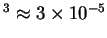
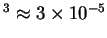

The narrow cavity limit is useful here for two reasons.
Firstly, while some numerical studies (e.g. Weaver & Viskanta 1991b; Rosenberger et al. 1997) have included the transpiration boundary condition and the interdiffusion energy flux, there has been no attempt to quantify their influence on the overall transfer rates. This is not surprising, since even for plane laminar steady constant-property flow, the problem depends on eight dimensionless parameters. However, for the narrow cavity limit, the effects are precisely quantified.
Secondly,
the concept of a narrow vertical air space is a very practical
one. It has long been known (Batchelor 1954)
that including an air cavity within a building wall
is an economical means of reducing its thermal conductance, and
the thickness of the air space is the parameter over which the
designer has the most control. The importance of the narrowness of the
space is that although the rate of radiative transfer is almost
independent of it,
if `the product of the temperature difference (in degrees
Fahrenheit) and the cube of the space thickness (in inches) is less than
3 [3 F.in
K.m]...
convection is practically suppressed' (ASHRAE 1993, p. 20.7).
This equates to about 1cm wall separation for a 30K temperature
difference, or with the properties of dry
air at 20
F.in
K.m]...
convection is practically suppressed' (ASHRAE 1993, p. 20.7).
This equates to about 1cm wall separation for a 30K temperature
difference, or with the properties of dry
air at 20 C, a Grashof number, Gr,
of about 4000--about half the critical Grashof number usually
(§5.4) associated with the transition to multicellular
convection. Given the strong dependency of Gr on the space
thickness,
C, a Grashof number, Gr,
of about 4000--about half the critical Grashof number usually
(§5.4) associated with the transition to multicellular
convection. Given the strong dependency of Gr on the space
thickness,  , though, the ASHRAE rule of thumb
represents a reasonable margin of safety. The suppression
of convection also depends on the height of the cavity (§5.5),
and a proper assessment of the strength
of convection should also take into account the buoyancy force due to
gradients in humidity (Wee et al. 1989).
The narrow cavity limit is
useful as it provides an upper bound on the thermal resistivity.
, though, the ASHRAE rule of thumb
represents a reasonable margin of safety. The suppression
of convection also depends on the height of the cavity (§5.5),
and a proper assessment of the strength
of convection should also take into account the buoyancy force due to
gradients in humidity (Wee et al. 1989).
The narrow cavity limit is
useful as it provides an upper bound on the thermal resistivity.